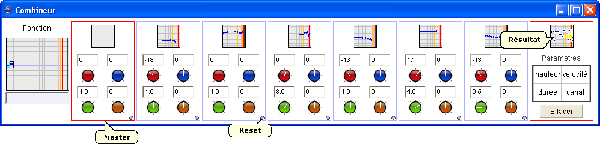

Le combineur permet d'appliquer une fonction à deux arguments de manière récursive sur les objets musicaux contenus dans les différentes cases. La fonction est d'abord appliquée sur les 5ème et 6ème objets, puis sur ce premier résultat et sur le 4ème objet, puis sur ce nouveau résultat et le 3ème objet et ainsi de suite.
Pour chaque objet, la hauteur, vélocité, durée et canal MIDI peuvent être ajustés : le réglage se fait par un mouvement vertical de la souris sur les boutons rotatifs, et peut être affiné par un appui sur Ctrl. De plus, un bouton de reset est disponible. La case le plus à gauche est un contrôle général qui permet d'agir sur le contenu de toutes les cases à la fois.
Le résultat est disponible dans la case de droite.